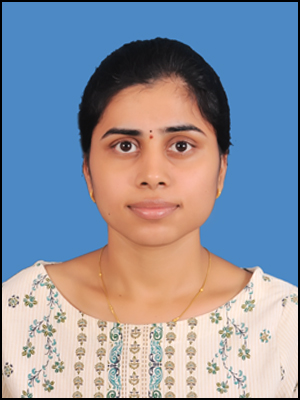

Hi, I'm Ravali. I completed my Bachelor's degree in Electrical and Electronics Engineering from Stanley College of Engineering and Technology for Women, affiliated with Osmania University. After graduation, I worked as an Automation Test Engineer. Later, I moved to the USA to pursue my Master's in Information Systems and successfully graduated. After completing my Master's, I worked at Entity Data as an AEM Developer. Currently, I'm learning Full Stack Development with Python to strengthen my development skills and expand my knowledge in both frontend and backend technologies.

| Degree | University/College | Year of Graduation | Percentage |
|---|---|---|---|
| Bachelor's in Electrical and Electronics Engineering | Stanley College of Engineering and Technology for Women, Osmania University | 2018 | 85% |
| Master's in Information Systems | University of MaryHardin Baylor | 2023 | 4 CGPA |
| This table provides an overview of my educational background, including the degrees I have earned, the institutions I attended, the years of graduation, and my academic performance. | Overall 85% | ||
Email: m.ravali.career@gmail.com